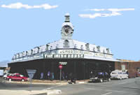
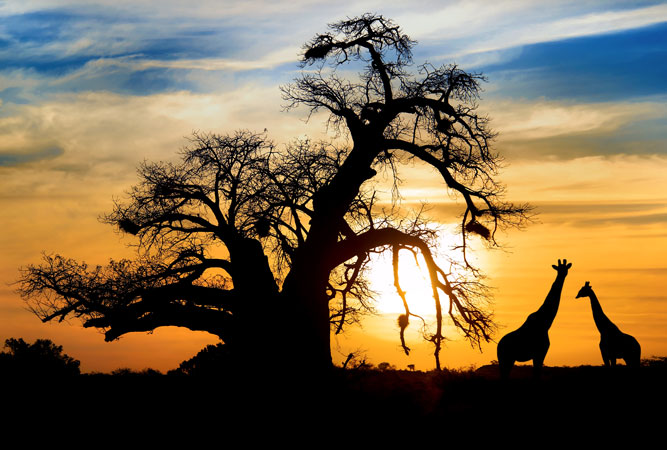

Limpopo borders Botswana, Zimbabwe and Mozambique, and makes it a good
starting point to explore those regions of Africa. This province was
formerly known as the "Northern Province". A part of the Kruger National
Park is situated in this province, wich attracts many tourists.
 
Above are some images of the must-see Plokwane Museum, and the giant
Boabab trees of Marakela Park. There is an abundance of wildlife to be
seen in this province such as these elephants.